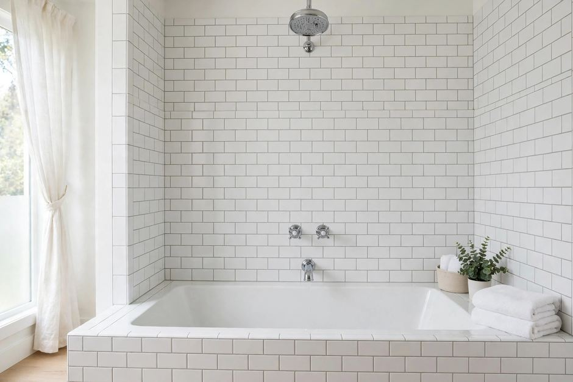
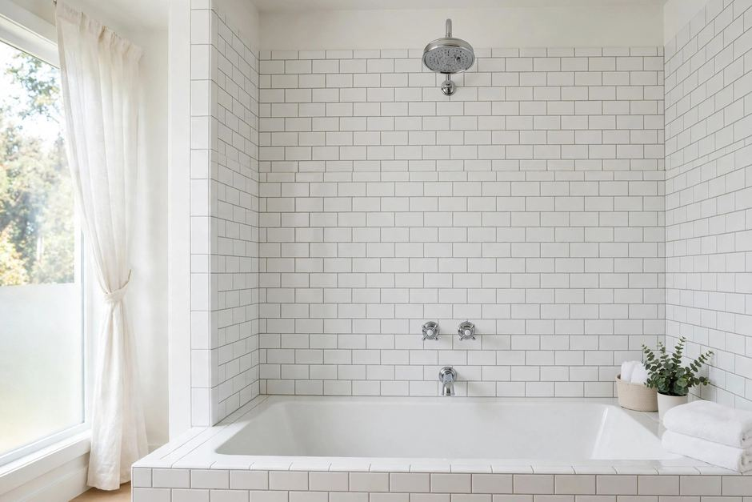

Bathtub Services
Bathtub Repair in Belleville, IL
Bathtub problems range from slow drains and leaking faucets to overflow faults and damaged seals around the tub. This page covers repair and installation in one place, including drain, overflow, and faucet work. Hinkle Plumbing Company assesses tubs in Belleville, IL, with shower repair context where tub and shower share fixtures.
1610 W Main St, Belleville, IL 62220Monday through Friday, 8:00 AM to 4:30 PM(618) 677-6556
What This Service Covers
Bathtub Repair Scope in Belleville
Bathtub scope covers drains, overflows, faucets, diverters, seals, and installation planning for bathrooms in Belleville, IL. Each part below is assessed on its own findings, and installation is discussed where tub condition no longer serves the bathroom.
Tub Drain Repair
Tub drain repair covers slow drainage, stopper faults, and drain seal leaks below the tub. Drain flow, stopper operation, and trap findings are reviewed, and access panel context shapes repair sequencing.
Overflow Drain Review
Overflow review covers gasket condition, overflow drain flow, and leak patterns during filling. Overflow findings shape repair scope, because overflow leaks often appear only when water reaches the overflow level.
Tub Faucet Repair
Tub faucet repair covers drips, handle faults, and diverter concerns where a shower shares the tub faucet. Cartridge and seal findings shape repair scope, and diverter operation is checked during assessment.
Diverter Valve Work
Diverter work addresses water flow switching between tub spout and showerhead in combination units. Diverter seating and seal findings are reviewed, and flow patterns at both outlets shape repair discussion.
Tub Seal and Edge Work
Seal work addresses caulking and sealing failures at tub edges that allow water behind walls or under floors. Seal condition and moisture patterns are reviewed, and sealing scope reflects the extent of moisture findings.
Bathtub Installation
Installation covers removal of the existing tub and installation of a replacement with new drain, overflow, and faucet connections. Rough-in context, access, and surround findings shape installation planning for the bathroom.
About Hinkle Plumbing Company
Bathtub Work From a Belleville Base
Hinkle Plumbing Company works from Belleville, IL, on bathtub repair and installation in bathrooms around the city. Drain, overflow, faucet, and seal findings are reviewed together, and scope is discussed before work begins.
Bathtubs combine large water volumes with drain, overflow, and faucet systems in a confined space, and leaks can affect floors and walls below. Drain access is often limited, and overflow faults appear only at higher water levels. Hinkle Plumbing Company reviews each part on its findings, and plumbing repairs context helps where supply or drain concerns extend beyond the tub.

How we workImage showing bathtub drain and overflow work in a Belleville bathroom.
How Assessment Works
Bathtub Assessment Steps
The steps flex with the condition of the job, but the sequence stays the same.
Discuss Symptoms
Slow drainage, overflow leaks, faucet drips, diverter faults, and edge moisture are discussed to narrow the fault. Symptom details help separate drain faults from faucet, overflow, and sealing concerns.
Test Drain and Overflow
Drain flow, stopper operation, and overflow behavior are tested with water at controlled levels. Test findings shape repair scope, and access panel observations are noted during testing.
Check Faucet and Diverter
Faucet handles, spout flow, and diverter switching are checked for wear and sealing faults. Findings shape cartridge and seal work, and showerhead flow is observed where a shower shares the faucet.
Check Seals and Surround
Tub edge seals, surround condition, and moisture patterns on nearby walls and floors are checked. Seal findings shape sealing scope, and moisture observations are shared where water damage is suspected.
Repair or Install
Repair or installation proceeds on the findings, with drain, overflow, faucet, and sealing checked after work. Findings are discussed, and operation observations are shared so the tub is understood after completion.
Repair Approaches
Bathtub Repair Methods
Bathtub methods reflect the fault found, the tub type, and access conditions behind and below the tub. Options below are discussed during assessment, and suitability is confirmed for the specific bathroom rather than assumed.
Stopper and Drain Work
Stopper work addresses drain plugs that stick, leak, or fail to hold water. Stopper type, linkage condition, and drain seal findings shape repair scope, and trap access context shapes sequencing.
Overflow Gasket Work
Overflow gasket work addresses leaks behind the tub wall at the overflow opening. Gasket condition and overflow drain alignment are reviewed, and access panel findings shape repair sequencing.
Cartridge and Valve Work
Cartridge and valve work addresses tub faucet drips and diverter faults. Internal part findings shape repair scope, and parts are matched to the faucet and valve type during planning.
Trap and Drain Clearing
Trap and drain clearing addresses hair and soap buildup that slows tub drainage. Clearing method reflects blockage findings and trap access, and drain flow is checked after clearing.
Full Tub Replacement
Full replacement suits tubs with cracked surfaces, persistent drain faults, or surrounds that no longer serve the bathroom. Access, rough-in, and surround findings shape installation planning.
Access Panel Planning
Access panel planning covers reaching drain, overflow, and valve connections behind tub walls. Panel location and wall condition shape repair sequencing, and restoration needs are discussed during planning.
Common Patterns
When Bathtub Repair Is Discussed
Bathtub concerns often appear during filling, draining, or shower use in combination units. The patterns below describe common reasons for assessment, without describing a specific property or job.

Tub Draining Slowly After Baths
A common call describes a tub that drains slowly after baths, with water standing longer than expected before clearing. Assessment reviews stopper operation, trap condition, and drain flow to narrow the cause. Clearing method reflects blockage findings, and overflow and faucet findings are reviewed alongside drain findings before repair scope is set. Assessment findings are discussed plainly before work scope is set for the property.
Water Appearing Below the Tub
A common call describes water appearing on the floor or ceiling below a tub, sometimes only when the tub is filled to a higher level. Assessment checks overflow gasket condition, drain seals, and faucet connections to narrow the source. Findings shape gasket, seal, or connection work, and moisture observations are shared where floor or wall damage is suspected. Combined findings shape the plan, and household observations are included in the discussion.
Signs to Note
Bathtub Signs That Call for Assessment
Most calls fall into a few patterns. Knowing which pattern applies decides what the visit involves.
Slow Tub Drainage
Slow drainage can reflect stopper faults, trap buildup, or drain restriction below the tub. Drain patterns and stopper findings are reviewed, and clearing method reflects blockage findings. Findings are reviewed during assessment.
Leaks When Filling High
Leaks that appear only at higher water levels can point to overflow gasket faults. Overflow findings are tested with controlled water levels, and access findings shape repair sequencing. Findings guide the next steps.
Tub Faucet Dripping
Tub faucet drips can reflect cartridge or seal wear inside the valve. Drip patterns and handle behavior are reviewed, and internal findings shape repair scope for the faucet. Assessment findings guide the response.
Moisture at Tub Edges
Moisture at tub edges can signal sealing failures that allow water behind walls. Seal condition and moisture patterns are reviewed, because edge leaks can damage surrounding surfaces. Findings shape the assessment response.
Scope Factors
What Shapes Bathtub Work Scope
Access, tub condition, and surround findings shape bathtub scope.
Repair Versus Installation
Part-level repair and full tub installation carry different scope, and tub condition findings shape the choice. Findings are discussed by phone, and installation planning includes drain, overflow, and faucet context.
Access and Surround Work
Access panel availability, wall condition, and surround findings affect repair sequencing. Access findings are reviewed during assessment, and restoration needs are discussed where openings are required. Scope is discussed before scheduling.
Faucet and Diverter Work
Cartridge, diverter, and showerhead findings add scope where combination units are involved. Faucet findings are included in the discussion, and readers are invited to call to discuss scope for a specific bathroom.
Reviews from Google
What Customers Say on Google
★★★★★
“Very prompt and responsive, the worker was friendly and informative! Will use this company again!”
★★★★★
“Don did an outstanding job for me when I needed him and highly recommend his business”
★★★★★
“Rated 5.0 out of 5 across 3 Google reviews, all five stars.”

Why does a tub leak only when filled high?
Leaks at higher water levels often point to overflow gasket or overflow drain findings, because overflow parts engage only when water reaches that level. Overflow condition is tested with controlled water levels, and gasket findings shape repair scope. Findings are reviewed together, and household observations are included in the discussion.
What causes slow tub drainage?
Slow drainage can reflect stopper faults, trap buildup, or drain restriction below the tub. Stopper operation and trap findings are reviewed, and clearing method reflects blockage material and access findings for the drain. Related system findings are reviewed together, and observations shape the response.
Does this page cover tub and shower combinations?
Yes. Combination units are covered, including diverter operation, showerhead flow, and shared faucet findings. Diverter seating and seal condition are reviewed, and flow patterns at both outlets shape repair discussion. Household observations are included in the discussion, and findings shape the response.
What affects the scope of bathtub repair or installation?
Tub condition, drain and overflow findings, faucet and diverter condition, access constraints, and surround findings shape the scope. Each factor is reviewed during assessment, and readers are invited to call (618) 677-6556 to discuss scope for a specific bathroom. Findings are discussed by phone before work is scheduled.
Related services
Related Services

Shower Repair in Belleville, IL
Shower repair covers valves, showerheads, drains, and enclosures, including combination units that share tub faucets.
Plumbing Repair in Belleville, IL
General plumbing repair covers leaks and drain concerns that can extend beyond the bathtub itself.
Faucet Repair in Belleville, IL
Faucet repair covers cartridge, seal, and handle work for tub faucets and other faucets in the bathroom.Mon–Fri 8:00 AM–4:30 PM
Discuss Bathtub Repair in Belleville
Call (618) 677-6556 during Monday through Friday, 8:00 AM to 4:30 PM to discuss bathtub repair in Belleville. Closed Saturday and Sunday. Drain, overflow, and faucet findings are reviewed during assessment.
Talk with the local team
Request Bathtub Repair & Installation
Call (618) 677-6556 during office hours, Monday through Friday, 8:00 AM to 4:30 PM. Tell us what is happening and we will talk through the next step.